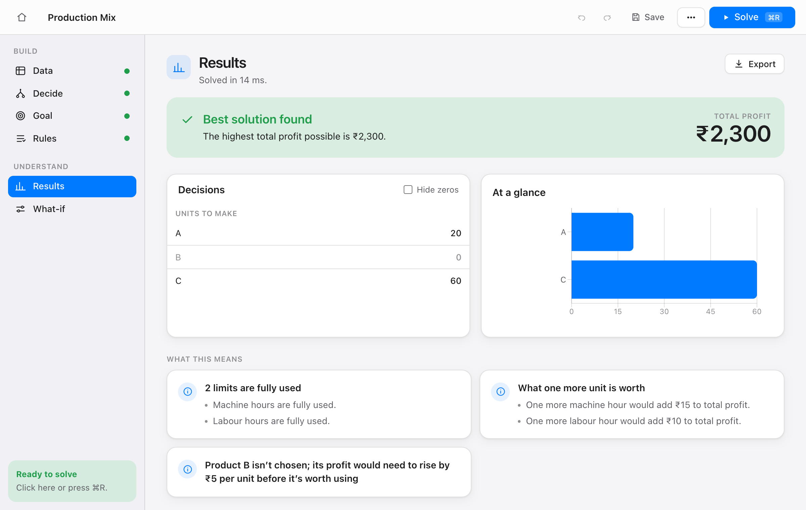

Describe what you can choose and what limits you. Atmost finds the best answer in one click, then explains it in plain language. No code, no cell references.
Free · macOS 11 or later · Apple Silicon and Intel

Products, machines, cities: list them once, fill in the numbers, and set your goal and rules as sentences. Paste straight from Excel or import a CSV.
See what to do, what is fully used, what is spare, and what one more unit would be worth, all written as sentences you can put in a report.
When rules clash, Atmost names the conflicting rules and how far they would have to bend. Mistakes in your data point to the exact cell.
The sidebar works as a checklist, so you always know what is left.
Atmost runs the open-source HiGHS solver inside the app. There is nothing to sign up for and nothing to upload.
Start from a template and change the numbers:
Each template is compared with a hand calculation, a textbook value or an independent solver.
| Problem | Optimal value | Checked against |
|---|---|---|
| Production mix | 2,300 | Hand calculation |
| Transportation | 153.675 | Dantzig’s textbook value and SciPy |
| Assignment | 13 | Brute force over all 24 assignments |
| Diet | 116.1918 | SciPy |
| Staff scheduling | 23 | SciPy milp (whole numbers matter here) |
| Wyndor Glass | 36 | Textbook |
Free for Mac. Open the .dmg, drag Atmost to Applications, and you are ready.
Download for MacVersion 0.1.0 · Free
Yes. Atmost is free to download and use. There is no account and no trial period.
Linear problems, where amounts can be any number, and mixed-integer problems, where some choices must be whole numbers or yes/no. That covers production planning, blending, transport, assignment, scheduling and similar course and business problems. It does not solve curved (non-linear) problems.
There is no variable cap like Excel Solver’s 200. Very large whole-number models will take longer, because the solver runs on your own machine.
Not yet. Atmost is Mac-only for now.
Yes. Results and explanations are written as plain sentences, and you can export the model to Excel, to Python (PuLP) or to the standard .lp format to check it elsewhere.
Download only from this page. If macOS still blocks it, open System Settings → Privacy & Security and choose “Open Anyway”, then tell us so we can fix it.